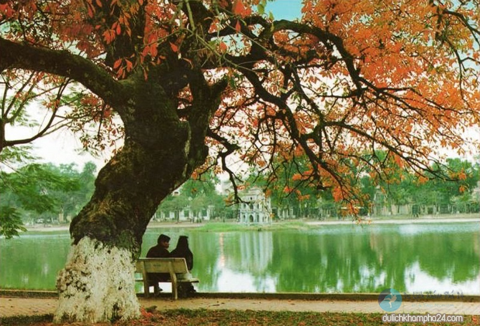
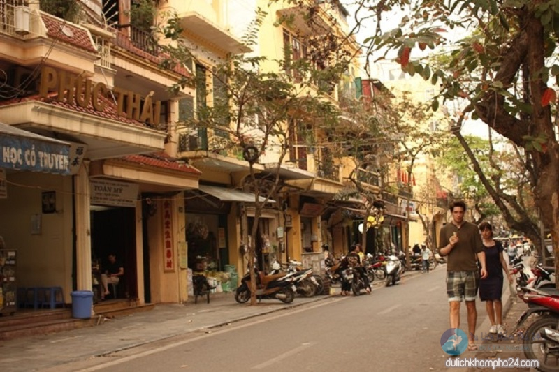

Giới thiệu về Hà Nội – Những danh lam thắng cảnh nổi tiếng
Lăng Chủ tịch Hồ Chí Minh
Lăng Chủ tịch Hồ Chí Minh là nơi giữ gìn thi hài Bác – người cha già kính yêu của dân tộc. Lăng được khởi công xây dựng vào ngày 2/9/1973 và hoàn thành vào ngày 19/8/1975. Công trình ngày cao 21,6 m, rộng 41,2 m, được làm hoàn toàn bằng nhiều loại đá quý hiếm khác nhau. Nhìn tổng thể, lăng như một bông hoa sen cách điệu. Lăng trở thành một điểm đến nổi tiếng mà bất kỳ ai khi đến du lịch Hà Nội đều muốn ghé thăm. Đến đây du khách không chỉ được chiêm ngưỡng kiến trúc đặc biệt này mà còn được tận mắt nhìn thấy Bác đang yên giấc ngủ.

Văn Miếu – Quốc Tử Giám
Đây vốn là trường học cổ của Kinh Thành Thăng Long và trường đại học đầu tiên ở Đông Nam Á. Văn Miếu không chỉ là một di tích lịch sử, văn hóa cổ mà còn là nơi diễn ra các hoạt động, sự kiện đậm đà bản sắc của người dân Thủ đô. Bên trong còn lưu giữ nhiều hiện vật quý như: chuông Bích Ung đại chung, tưởng Khổng Tử82 bức bia ghi tên những người đỗ Tiến sĩ,… Nếu bạn là người yêu thích lịch sử Hà Nội và muốn tìm hiểu về văn hóa học thời xưa thì đây là một địa điểm lý tưởng.

Hồ Tây – mặt gương của Hà Nội
Hồ Tây có diện tích rộng hơn 500 ha với bề dày lịch sử mấy nghìn năm. Cùng với hồ Trúc Bạch, Hồ Tây góp phần làm nên chất thơ cho thành phố. Theo kinh nghiệm du lịch Hà Nội, nếu dạo một vòng quanh hồ, bạn sẽ được thăm thú kha khá các di tích và thắng cảnh. Làng Nhật Tân với hoa đào nợ rộ khi xuân về, làng Xuân Tảo với Sóc thờ Thánh Gióng, làng làm giấy cổ tích Kẻ Bưởi,… và một số công trình được xây dựng quanh hồ làm quanh cảnh thêm đa dạng.

Hồ Hoàn Kiếm – lãng hoa giữa lòng thành phố
Được mệnh danh là lãng hoa giữa lòng thành phố, hồ Hoàn Kiếm được bao quanh bởi ba con đường Lý Thái Tổ, Đinh Tiên Hoàng, Hàng Khay dài khoảng 1,8 km. Mặt nước trong xanh soi bóng những hàng cây cổ thụ, những rặng liễu thướt tha, những mái chùa, đền, tháp rêu phong, cổ kính và cả những tòa nhà mới cao tầng. Tới đây, bạn có thể dạo quanh một vòng ngắm nhìn khung cảnh êm đềm của hồ, hít hà bầu không khí trong lành hoặc đơn giản là tìm một góc để quan sát nhịp sống người Hà Nội,… cũng là trải nghiệm rất thú vị đó.
Khu phố cổ Hà Nội – nơi cất giấu thời gian
Phố cổ Hà Nội – khu phố cổ xưa độc đáo ở Việt Nam nằm ở quận Hoàn Kiếm, từng được du khách Tây ví như thành Venice cổ kính. Nó còn được gọi với cái tên khác là khu 36 phố phường, đây xưa là các phường hội thủ công, mỗi phố bán một món hàng hóa. Bên trong khu phố còn lưu giữ các ngôi nhà truyền thống, các công trình văn hóa, lịch sử còn giữ được kiểu kiến trúc của dân tộc Việt Nam và châu Á. Những hoạt động sinh hoạt, buôn bán, sản xuất, vui chơi, tạo nên sức sống trường tồn cho khu phố.
